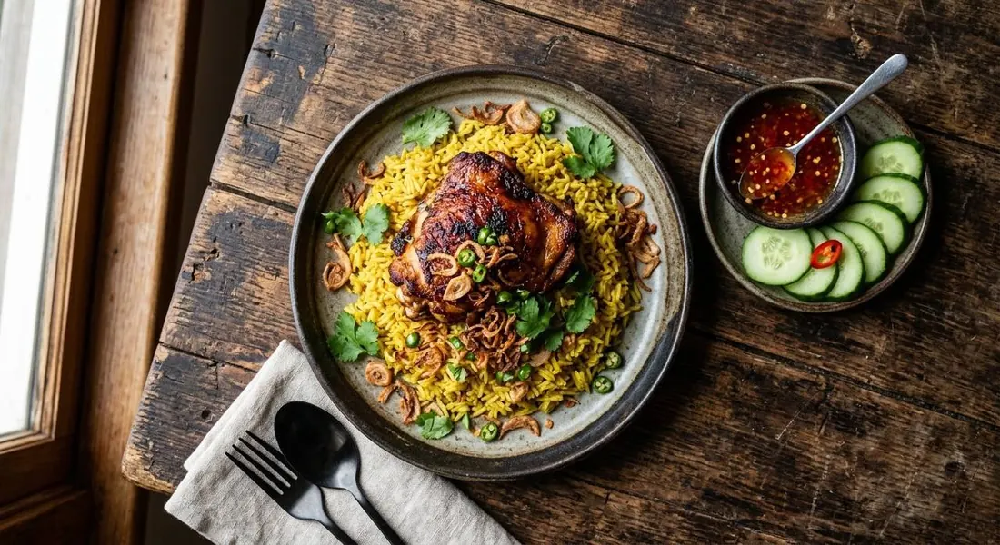

Chicken marinated in yogurt and toasted spices, browned in butter, then steamed over jasmine rice stained yellow with turmeric — Thailand's biryani.

The TrueID source says it plainly: "ข้าวหมกไก่เป็นเมนูของชาวมุสลิม" — khao mok gai is a dish of Thailand's Muslim community, the local descendant of the biryani brought by Persian and Indian traders. Where Indian biryani builds its rice with saffron and ghee, the Thai pot runs on butter, shallots, turmeric and a curry-powder blend — softer, slightly sweet, and finished with fried shallots instead of crisped onions.
The method is a two-stage steam: the chicken is marinated in yogurt and evaporated milk with half the spices — the milk-tenderising trick every source shares — browned in butter to colour the skin, then laid over the raw rice so its juices season the grains as they cook. Wongnai's recipe does the whole thing in a rice cooker, and is explicit about the chicken: "brown the skin without cooking it through, because it will cook with the rice."
The Kapook Islamic version goes further: toasted and ground coriander and cumin on top of the ready-made spice mix, a cinnamon stick and bay leaves in the rice, and the chicken marinated overnight. What you eat it with splits by region — the sources serve it with a sweet-sour cucumber-chilli dip, or a side bowl of clear soup, or a squeeze of lime.
| Thai | English | Amount |
|---|---|---|
| ข้าวหอมมะลิ | Jasmine rice | 300 g |
| สะโพกและปีกไก่ | Chicken thighs and top wings | 4 pieces |
| โยเกิร์ตรสธรรมชาติ | Natural yogurt | ¼ cup |
| นมข้นจืด | Evaporated milk | ¼ cup |
| เกลือป่น | Salt | 1 tsp |
| น้ำตาลทราย | Sugar | 2 tsp |
| ใบกระวาน | Bay leaves | 2 |
| กานพลูป่น | Ground cloves | 1 tsp |
| ลูกผักชีป่น | Ground coriander seed | 1 tsp |
| ยี่หร่าป่น | Ground cumin | ¼ tsp |
| อบเชยป่น | Ground cinnamon | ¼ tsp |
| ขมิ้นผง | Turmeric | ¼ tsp |
| ผงกะหรี่ | Curry powder | 2 tsp |
| เนยสดรสเค็ม | Salted butter | 50 g |
| หอมแดง | Shallots | 10 g |
Kapook's additions for the full Islamic-market version: 3 tbsp toasted-ground coriander and cumin, a cinnamon stick and 2 bay leaves in the rice, chicken marinated overnight, and 1 cup of sliced shallots — half fried crisp, half cooked into the rice. Dip: coriander, mint, green bird's-eyes, garlic, sugar, vinegar and salt, blended sharp-sweet.
Ready-made mix or from scratch. Kapook builds on a packet of khao-mok spice mix and deepens it with fresh toasted cumin and coriander; Wongnai grinds the whole blend from the shelf. The packet version is how most Thai home cooks start.
Tomato in the rice. TrueID's home version cooks tomato into the spiced water before it meets the rice — the southern/Betong habit. The others leave the rice clean. Both are authentic.
What's on the side. Kapook serves the sharp sweet-sour cucumber-chilli dip; TrueID serves a clear beef soup; Wongnai shortcuts to seafood dipping sauce. The dish demands something sharp and something wet — the sources just disagree on which.
Cinnamon. Kapook uses a whole stick in the rice; Wongnai uses ground cinnamon in the blend. Same warmth, different route.
Marinating time. Two hours (Wongnai) versus overnight (Kapook). Longer is always better for the thighs.
This recipe is translated from the following Thai-language sources. Where they disagree, we've said so.
1. Wongnai — "แจกสูตรฟรี ข้าวหมกไก่ สไตล์โฮมเมด ทำง่ายด้วยหม้อหุงข้าว" (the recipe used here) — wongnai.com
2. Kapook — "ข้าวหมกไก่ สูตรสำเร็จกลิ่นหอมพ่วงวิธีทำน้ำจิ้มข้าวหมกไก่" (Islamic-market version + the dip) — cooking.kapook.com
3. TrueID — "ข้าวหมกไก่ สูตรบ้าน ๆ ฉบับมือใหม่" (home version, tomato in the rice, beef soup on the side) — food.trueid.net
4. TrueID — "สูตรทำ ข้าวหมกไก่ หม้อหุงข้าว เอาใจเด็กหอ และชาวคอนโด" (dorm-room rice-cooker version) — food.trueid.net